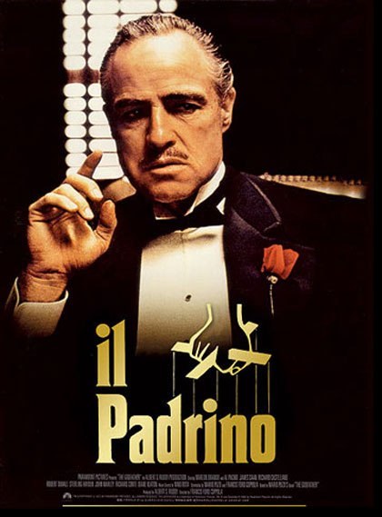

Storia della recitazione
L'arte drammatica è l'arte del recitare. Essa è Diffusa in tutto il mondo, ed è riconducibile alla cultura e al costume dei diversi popoli e delle differenti etnie. L'arte della recitazione si perde nella notte dei tempi. In età classica si distingue una recitazione con la maschera (tragica e comica) e una senza maschera (mimo e pantomimo). In la recitazione raggiunge il suo apogeo nel 4° sec. a.C.; a nel 1° sec. a.C. (Roscio, attore comico). I primi secoli dell’era cristiana sono caratterizzati, oltre che dalla comparsa delle donne sulla scena, dal predominio dell’arte pantomimica introdotta dagli orientali.Dal 5°-6° sec., cessato l’uso di rappresentare tragedie e commedie, la recitazione si riduce all’arte imitativa e onomatopeica di mimi isolati e poi a quella, pure monologante, dei giullari. Soltanto nel tardo Medioevo, dal 12° sec., una recitazione sia pure elementare torna a essere praticata nel mondo cristiano per dar vita scenica al dramma sacro. Nel Cinquecento, con il ritorno alla rappresentazione di commedie e tragedie classiche, si distingue una recitazione aulica, tendente a privilegiare il testo scritto, e una recitazione dei comici italiani dell’arte, reinventori della recitazione all’impronta (senza testo scritto) e di una tecnica dell’attore basata su un rigoroso impiego di tutti i mezzi espressivi del corpo umano. Fu Molière nel Seicento a operare la fusione tra recitazione classicista e tecnica dei comici dell’arte. Il Settecento è in tutta delle querelle teoriche sulla recitazione teatrale (F.A.V. Riccoboni, P. Rémond de Sainte-Albine, G.E. Lessing, , J.-J. Rousseau), che nell’Ottocento lasciarono il posto alla trionfante ascesa del ‘grande attore’ romantico, alla ricerca di una ‘verità’ fondata sulla rappresentazione delle passioni. La fine del secolo vede la breve stagione della recitazione naturalista e verista, la quale nel Novecento genera una reazione che porta la recitazione al recupero di forme e convenzioni lontane nel tempo e nello spazio (commedia dell’arte, teatro elisabettiano, teatri orientali, primitivi) e alla rottura del quadro scenico ‘all’italiana’.
Metodi di recitazione
Il Metodo Stanislavskij :il lavoro di Constantin Stanislavski ha segnato un grande ambiamento nella recitazione del 20° secolo e ha ispirato una nuova generazione di tecniche e insegnanti.Il metodo rivolge l’attenzione alla psicologia del personaggio e si basa sulla ricerca, da parte dell’attore, di affinità che possano legarlo al personaggio da lui interpretato. Grazie a degli esercizi di stimolazione delle varie emozioni da provare in scena, la tecnica si ripropone di entrare nel testo preso in analisi, di coglierne il messaggio intrinseco e portarlo alla luce, tramite le proprie sensazioni. Il lavoro di Stanislavski venne pubblicato nel 1938, con il titolo Il lavoro dell’attore su se stesso e nel 1957 uscì postumo Il lavoro dell’attore sul personaggio.
Il Metodo di Lee Strasberg: il metodo di Lee Strasberg venne ispirato da quello di Stanislavski, ma diversamente da quest’ultimo, che si basava su una nascita nuova per l’attore ad ogni ruolo interpretato, il primo utilizzò la “memoria emotiva“, trovando nel personaggio le abitudini e i modi di fare della propria persona, senza quindi la necessità di annullare se stessi. Non ascoltare parola per parola i suggerimenti del regista, ma sforzarsi di ricordare le emozioni provate in situazioni simili a quelle descritte nel copione, cercando di rendere l’interpretazione quanto più realistica possibile.
Il Metodo di Stella Adler: stella Adler è stata l’unica attrice americana a studiare con Stanislavskij stesso, sviluppando poi il proprio Metodo, che prendeva le basi sia dal suo maestro che da Lee Strasberg. La tecnica di Adler differisce da Strasberg perché sottolinea l’immaginazione, oltre al richiamo emotivo e non condivide la completa immedesimazione nel ruolo o il cercare nella propria vita il dolore o l’emozione provata dal personaggio. “Portare alla luce esperienze vissute, come ad esempio la morte di mia madre, per dare alla luce un personaggio è da malati. Se questo è recitare, non voglio farlo“, disse infatti la Adler.
Tecnica di Meisner: la tecnica di Sanford Meisner prende come presupposto il legare l’attore ai propri impulsi, facendolo reagire con il cuore e non con la testa. “Lo scopo dell’arte è quello di illuminare la condizione umana. Si deve cercare sempre di creare un comportamento che esprima la vita nella sua forma più significativa. Non possiamo dare attenzione a qualcosa che svilisca la nostra arte”, diceva infatti il fondatore di questo metodo, che per dare forza alla propria tesi ha creato degli esercizi che aiutavano l’attore ad agire con istinto, come il più famoso esercizio di ripetizione, in cui due attori seduti uno di fronte all’altro devono rispondere sul momento con frasi ripetute, dando massima attenzione alla capacità di flessibilità, apertura e di ascolto.
Attori famosi
John Wayne
|
|
John Wayne:John Wayne (Winterset, 26 maggio 1907 – Westwood, 11 giugno 1979), è stato un attore e regista statunitense.Soprannominato Duke , cominciò la carriera con il cinema muto negli anni venti, diventando poi fra gli anni quaranta e gli anni settanta uno degli attori più famosi del mondo, celebre soprattutto per i suoi film western, ma anche per molti altri ruoli in generi differenti. Si identificò nel ruolo dell'eroe senza macchia e senza paura, rude ma generoso ed è considerato una leggenda del cinema: l'American Film Institute l'ha inserito al tredicesimo posto tra le più grandi star della storia del cinema
|
James Dean
|
|
James Byron Dean (Marion, 8 febbraio 1931 – Cholame, 30 settembre 1955) è stato un attore statunitense. L'importanza di Dean come icona culturale si riassume perfettamente nel titolo del suo film più celebre: Gioventù bruciata, nel quale ricopre il ruolo del problematico ribelle adolescente Jim Stark. La sua estrema popolarità trova le sue radici in soli tre film, gli unici di cui è protagonista. La sua fama ha raggiunto i paesi di tutto il mondo, preservata intatta dalla precoce morte, avvenuta a soli 24 anni a causa di un incidente stradale. Viene ricordato come un seguace della filosofia del carpe diem e spesso come la quintessenza stessa della gioventù statunitense. Sebbene sia spesso considerato un personaggio la cui fama va ben al di là delle sue qualità di attore, già prima della morte la critica parlava positivamente delle sue interpretazioni. È stato il primo attore ad aver ottenuto una nomination postuma al Premio Oscar, pr il suo ruolo nel film La valle dell'Eden. A Dean fu conferito il Golden Globe per il miglior attore nel 1956 (postumo). Ha ottenuto inoltre una candidatura all'Oscar al miglior attore per il film Il Gigante sempre postumo nel 1956. L'American Film Institute ha inserito Dean al diciottesimo posto tra le più grandi star della storia del cinema
|
Al Pacino
 |
Al Pacino: Alfredo James "Al" Pacino (New York, 25 aprile 1940) è un attore, regista, sceneggiatore e produttore cinematografico statunitense. Considerato uno dei maggiori attori della storia del cinema. AlPacino ha vinto il Premio Oscar nel 1993 per l'interpretazione del tenente colonnello Frank Slade in Scent of a Woman - Profumo di donna. Nel corso degli anni ha dato vita a memorabili personaggi rimasti impressi nella storia del cinema moderno e nella cultura popolare, tra cui gangster quali Michael Corleone nella trilogia de Il padrino (1972-1974-1990) di Francis Ford Coppola, Tony Montana in Scarface (1983), Carlito Brigante in Carlito's Way (1993), entrambi i film per la regia di Brian De Palma e Benjamin Ruggiero in Donnie Brasco (1997) di Mike Newell.
|
Marlon Brando
|
 |
Marlon Brando, Jr. (Omaha, 3 aprile 1924 – Westwood, 1º luglio 2004) è stato un attore statunitense. È unanimemente considerato una delle maggiori stelle di Hollywood e uno degli attori più carismatici e di maggior talento della storia del cinema. Raggiunse la popolarità interpretando Stanlsey Kowalski nel film Un tram che si chiama Desiderio (1951) . Successivamente scandì gli anni cinquanta interpretando film rimasti nella storia come Il selvaggio (1953), Fronte del porto (1954), che lo consacrò definitivamente, e Bulli e pupe (1955). Dopo aver diretto e interpretato I due volti della vendetta (1961), sua unica regia, recitò nei film La caccia e La contessa di Hong Kong che non raggiunsero i risultati sperati, mentre tornò al grande successo internazionale con capolavori quali Il padrino (1972), Ultimo tango a Parigi (1972) e Apocalypse Now (1979). Nel 1978 interpretò inoltre il ruolo di Jor-El nel film Superman. Otto volte candidato al Premio Oscar (riconoscimento che si aggiudicò due volte, rifiutandosi però, nella seconda occasione, di ritirare la statuetta in segno di protesta contro le ingiustizie nei confronti dei nativi americani]), vanta una filmografia relativamente limitata (in tutto poco più di una quarantina di titoli). I suoi film, visti da oltre 800 milioni di spettatori un primato che non ha eguali nella storia del cinema americano), riscuotono ancora oggi grande successo e alcuni sono considerati grandi capolavorI. Tra i grandi ruoli da lui interpretati, sono da ricordare Stanley Kowalski in Un tram che si chiama Desiderio, prima a teatro e poi nell'omonimo film del 1951; Johnny Strable, il capo di una banda di motociclisti nel film Il selvaggio (1953); Marco Antonio nel Giulio Cesare (1953) di Mankiewicz; lo scaricatore di porto Terry Malloy in Fronte del porto (1954); il giocatore Sky Masterson in Bulli e pupe (1955); il primo ufficiale Fletcher Christian ne Gli ammutinati del Bounty (1962); don Vito Corleone ne Il padrino (1972); il vedovo Paul in Ultimo tango a Parigi (1972); Jor-El, padre del supereroe in Superman (1978), e il colonnello Kurtz in Apocalypse Now (1979).
|
Katherine Hepburn
 |
Katharine Hepburn, (Hartford, 12 maggio 1907 – Old Saybrook, 29 giugno 2003), è stata un'attrice statunitense. Nella sua carriera, durata più di settant'anni e in cui ha recitato in una vasta gamma di generi dalla Screwball comedy ai film drammatici, ha ricevuto dodici nomination al Premio Oscar come miglior attrice protagonista vincendone quattro. Nel 1999 l'American Film Institute, l'ha classificata al primo posto fra le più grandi star, ritenendola la più grande attrice statunitense di tutti i tempi. Cresciuta in Connecticut, Katharine Hepburn ha incominciato a recitare mentre studiava al Bryn Mawr College. Dopo quattro anni di teatro, le recensioni favorevoli del suo lavoro a Broadway la portarono all'attenzione di Hollywood. I suoi primi anni nel mondo del cinema vennero segnati dal successo, tanto da farle vincere il premio Oscar per il suo terzo film La gloria del mattino (1934), ma in seguito fu protagonista di una serie di film che fecero fiasco al botteghino, tanto che nel 1938 venne etichettata come «veleno per il botteghino». L'attrice ideò la propria rimonta, riscattando il suo contratto con la RKO Radio Pictures e comprando i diritti cinematografici di Scandalo a Filadelfia, che vendette a condizione di interpretare il ruolo della protagonista, che la consacrò nuovamente a Hollywood. Nel 1940 venne ingaggiata dalla Metro-Goldwyn-Mayer, dove lavorò a fianco di Spencer Tracy. Nella seconda parte della sua carriera è apparsa regolarmente in produzioni teatrali shakespeariane e ha affrontato una serie di ruoli letterari. Ha vinto altri tre premi Oscar per le sue interpretazioni in Indovina chi viene a cena? (1968), Il leone d'inverno (1969) e Sul lago dorato (1981). Nel 1970 ha cominciato a comparire in film per la televisione, che divenne il centro della sua carriera in età avanzata.
|
Le fonti
wikipedia-arte drammatica, enciclopedia treccani-recitazione, http://youpopcorn.net/le-tecniche-recitative-adoperate-maggiormente-in-teatro-e-al-cinema/, https://it.wikipedia.org/wiki/John_Wayne, https://it.wikipedia.org/wiki/James_Dean, https://it.wikipedia.org/wiki/Al_Pacino, https://it.wikipedia.org/wiki/Marlon_Brando, https://it.wikipedia.org/wiki/Katharine_Hepburn